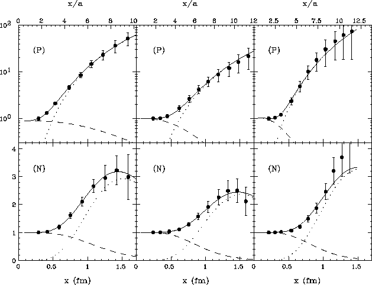

In order to understand the importance of instantons in QCD one
can study the behavior of hadronic correlation functions under
cooling. This figure shows the pion and proton correlations
functions (normalized in a way that is explained in more detail
below) in the full configurations and after
25 and 50 cooling sweeps.
What's the point? The correlation functions (as well as the
corresponding masses, coupling constants, etc.) are hardly
affected by cooling!
Source: Chu, Huang, Grandy and Negele, Phys. Rev. D